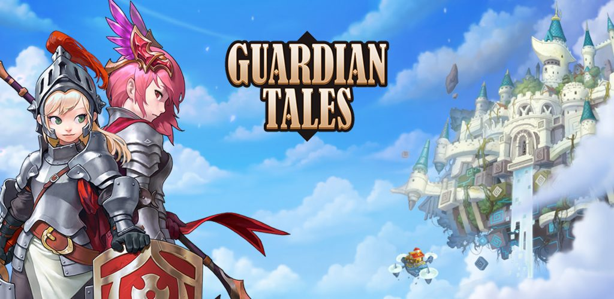

Guia Guardian Tales
Conhecendo o HeavenHold
Meu nome é Luan Martins, sou um progamador na area de websites. Eu sempre gostei de jogar Guardian Tales, tanto que é um dos meu jogos favoritos, resolvi então criar um site guia para iniciantes, nele vai ter desde sobre todos os mundos até como evoluiar rapidamente seguindo os meus métodos.
Sobre o site em si, temos uma barra de navegação acima. Em home você irar encontrar tudo que ha no lob do jogo apartir do mundo 2, como a Loja, coleção, inventario, melhorar e convocação, alem do Heavenhold. Na parte da Aventura você ira encontrar tudo sobre os mundos e ainda a Rachad, Torre, Coliseu, Multiplayer, Historia Secundaria e a Koma zon. Na parte de Heroi você encontrara tudo sobre o heroi, desde os equipamentos até status e despertar.
Introdução ao HeavenHold: Conhecendo a Ilha
O Heavenhold é a nossa cidadezinha flutuante, nela podemos construir edificios para aumenta a felicidade dos nosso moradores e temos edificios unicos que nos ajudam durante o jogo. O Heavenhold é liberado ao completar o mundo 1 e possui algumas coisas que são liberadas conforme você progride na historia. Existem 2 tipos de edificios que podem ser construidos, os de diversão, bebida e comida, é necessario ter esses edicios para que você tenha uma produção melhor de sp (pontos usados para comprar as coisas). No Heavenhold existem 6 construções que você so libera progradindo na historia. São elas: Cabana do Guardião (não é esse o nome certo mas prefiro fala assim), Torre do Horizonte, Torre do HeavenHold, Elevação Orbital, Rachad do Espelho e Zona de treinamento, alem das pagas com sp que são, a deusa congelada (1.000.000) e a maquina de venda misteriosa (acho que é mais de 1.000.000). Tem tambem o pier suspenso mas esse só é liberado ao alcançar o niver 100 do guardião.
Cabana do Guardião
Essa é a primeira construção que você libera, não sei quando mas acho que deve ser deopis de completar o mundo 2 ou o 3, no maximo até o 4. A cabana do guardião é muito importante pois é nela que você ira farmar pontos do guardião para aumentar seu nivel do guardião. Mas qual a vantagem de aumentar seu nivel do guardião? Primeiro e acho que a mais importante, avanço rapido nas rachad, digamos que isso é essencial para farmar já que lhe faz você economizar seu tempo. No nivel 26 (eu acho) você libera o avanço rapido nas rachad de recursos (ouro, xp e item), no nivel 51 (eu acho tambem, se não for é 56) você libera o avanço rapido na rachad do despertar, no nivel 76 (tambem não sei se é) você libera outros slots para farmar mais pontos do guardião e acho que tem algo a mais mas eu to nivel 71 ainda.
Torre do Horizonte
Uma coisa a se dizer é que no Heavenhold a maioria das coisas são liberadas depois do mundo 7, e grande parte delas são repetidas de coisas que você ja liberou. É o caso da Torre do Horizonte e Torre do Heavenhold. Na TH (torre do horizonte) você possui 2 opções de marmorras para farmar, elas mudam com o tempo (para mim tava liberado a de agua e sombrio), quando você escolhe uma delas tipo ali agua, você só pode usar heroi daquele elemento, como podes ver na imagem. Na TH exitem 3 tipos de fazes, batalha normal (as com uma bolinha), batlha elite (as com 2 bolinhas) e batalha boss (se ja sabe na 3 bolinhas).
Elevação Orbital
A Elevação Orbital, podemos dizer que isso foi a coisa mais inovadora que eu vi no Heavenhold depois do mundo 7 alem da Zona de Treinamento. Se você joga no coliseu sabe como é o sistema de batalha, ismagina isso mas ao inves de outros players você estara lutando contra mostros! Sim essa é a inovação, elevação orbital é basicamente isso.

Zona de Treinamento
Como dito essa foi a maior inovação desde que eu descobri a rachad. Quando você termian o mundo 8 e vai para o 9 você sente que o jogo ta ficando muito dificil e no 10 nem se fala, to na fase 1 ainda de la, para resolver esse problema existe a Zona de Treinamento, nela você pode colocar um heroi de sua escolha (no meu caso a Tinia) e ela ira ficar nivel maximo, enquanto o hero estiver ali você não podera ver o despertar dele nem upar e não podera ver a evolução e é claro evoluir ele, como ele esta nivel maximo não é possivel fazer isso. Na questão do nivel tambem, quando você termina um mundo e libera a expnasão de nivel o heroi evolui automaticamente. Uma estrategia para aproveitar a zona de treinamento ao maximo é, sempre coloque nela um heroi que você não ira upar no momento e foque em um outro hero. Seguindo no meu caso eu coloquei a Tinia porque ela é muito forte e da muito dano, logo eu não precisaria me preocupar em evoluir ela, por isso pude focar na Eva que é a minha suporte, isso adiantou muito o trabalho me livrando de ter que dividir as pedras do despertar entre a Tinia e a Eva. Sobre os outros slots eu não sei como libera, isso é algo que me falta descobrir.
Rachad do Espelho
Chegamos então na Rachad do espelho, no jogo exitem 7 rachads que são liberadas logo no mundo 2, mas existe uma rachad que so é liberada após o mundo 7 (como tudo em Heavenhold) que é a Rachad do espelho, neola como o prorpio nome ja diz é possivel farmar fragmentos de espelho que são utilizados na loja de estilhaço de espelho. Não se engane achando que essa rachad é facil como as outras, só o primeiro nivel dela ja exige nivel 60, ou seja mundo 8 (no mundo 7 o nivel é expandido para 60, no 8 para 63, e por ai vai). Mesmo você sendo niveis acima ainda vai ser dificil tankar sem um time bem configurado, outra coisa é em relação ao avanço rapido, você só o libera no niver 126 do guardião (se não me engano).